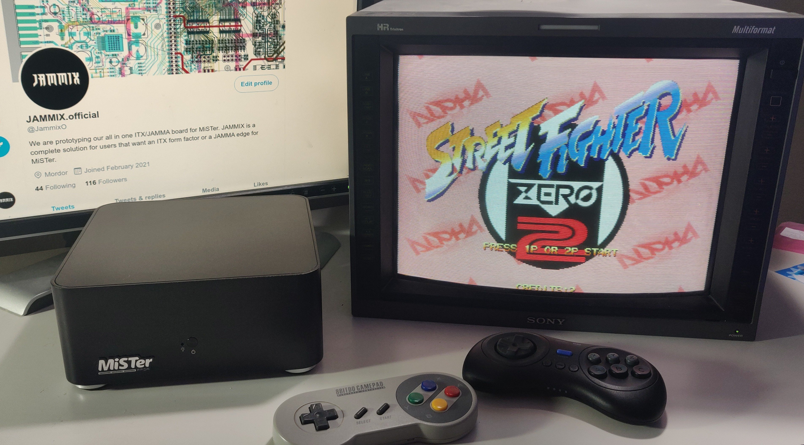
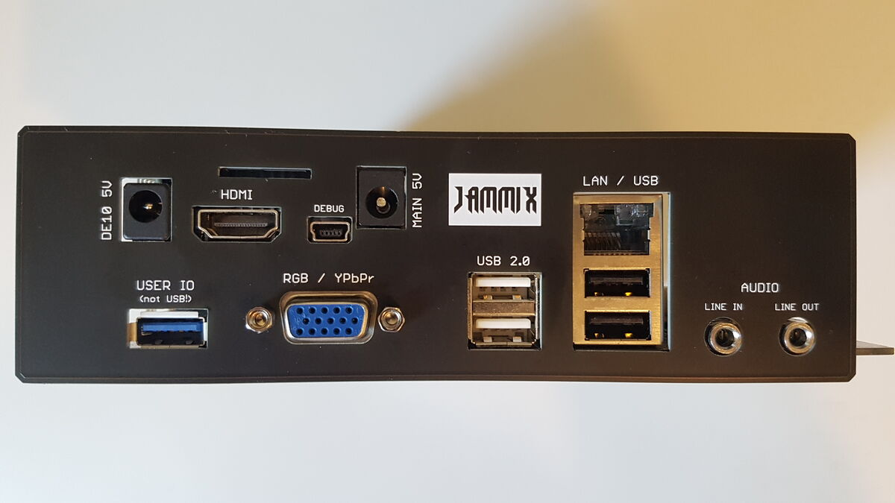
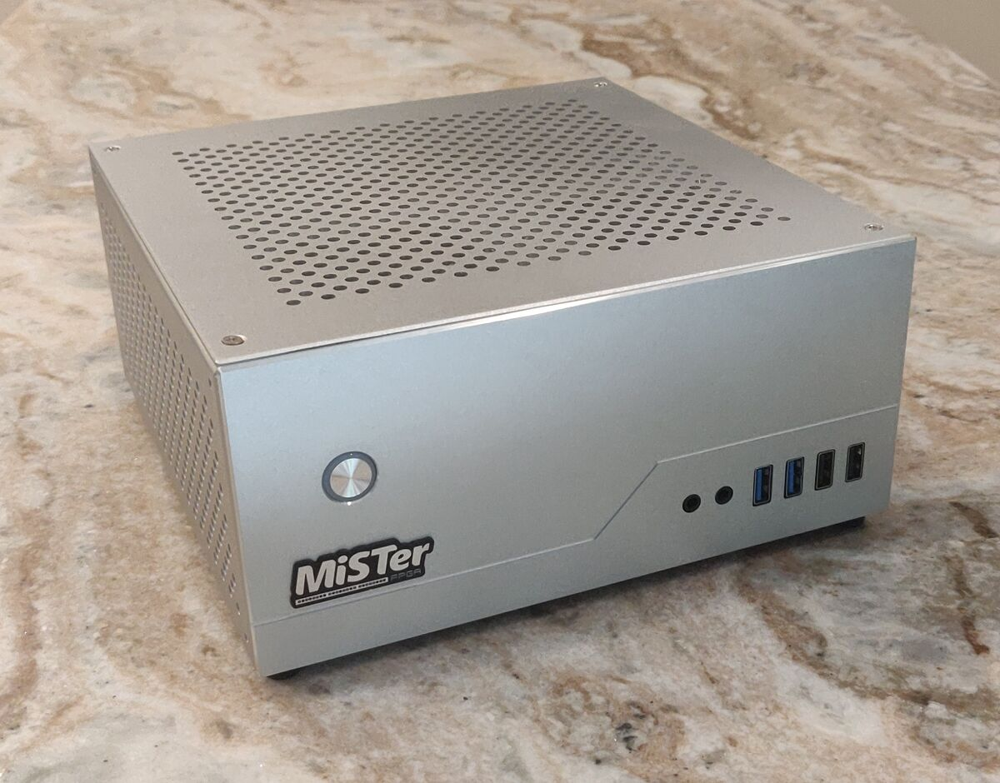
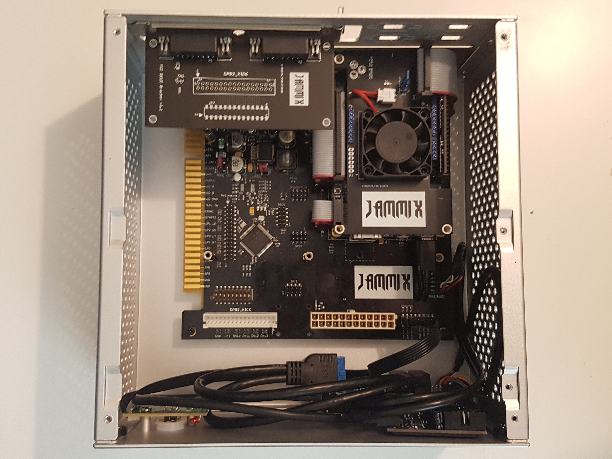
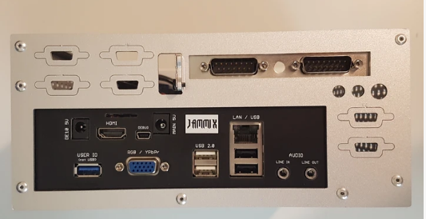
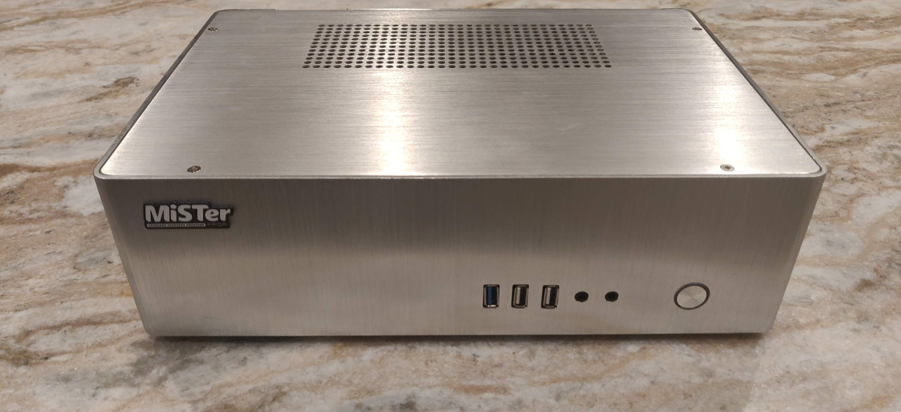
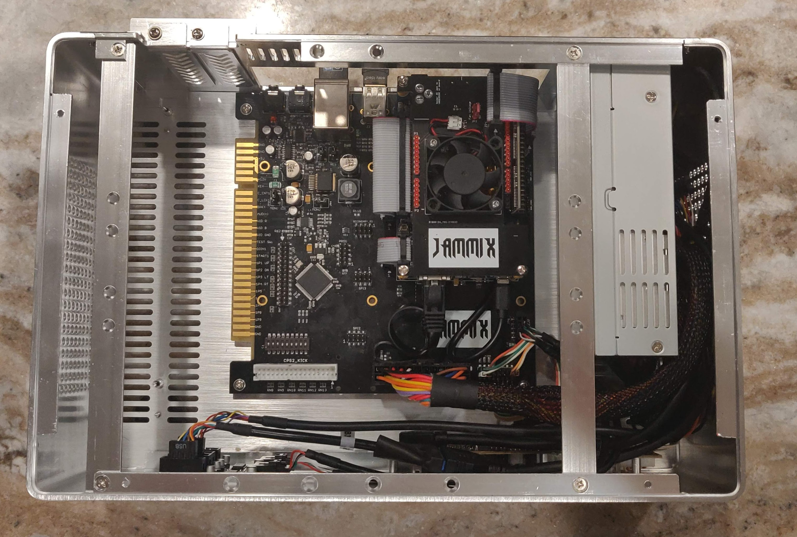

JAMMIX
It's the perfect io board for:
- Console
- PC
- Arcade
JAMMIX is the complete solution for users that want an ITX form factor or a JAMMA edge for MiSTer.
for


Features
- Hundreds of ITX/DTX/ATX case options available on the market
- Simultaneous buffered RGB output via JAMMA and "VGA" port
- Sync-On-Y circuit, for Component output via "VGA" port (JAMMA RGB output not available in Component mode)
- JAMMA RGB levels are 4V (p-p), for best compatibility with standard arcade monitors
- Buffered TTL Csync output on JAMMA edge
- Onboard Stereo audio amp, for Neo Geo style cabinets
- Neo Geo MVS harness compatible
- I2S audio DAC for higher quality analog audio output
- Buffered Audio line-out
- Audio line-in (no additional ADC addon needed)
- Onboard USB 2.0 hub with four external USB 2.0 ports
- Two USB ports on an internal header
- Ethernet routed to the IO shield
- Self-resetting fuses on all USB ports and user port
- Overvoltage protection on the 5V rail
- Multiple power options: ATX, JAMMA, or 5V DC jack
- ATX power with soft power on/off functionality
- JAMMA edge connector with gold fingers and beveled edge
- Support for extra "CHAMMA" style button inputs (up to six buttons per player)
- CPS2 style "Kick" header with 22 extra player control inputs
- Replicates functions of the v6.1 IO Board
- Mounting holes for 2.5" HDD/SSD
- Expansion board addons for enhanced IO available in future
Console-Like ITX Build
JAMMIX is shown below in a console-like ITX case. Gone are the days of awkward cases, untidy-looking cables and dongles.




Arcade Cabinet Solution
JAMMIX also serves as the ideal all-in-one MiSTer solution for arcade cabs, with its beveled JAMMA edge, audio amp, USB ports, and simultaneous output of both analog and digital video.




Requirements & Notes
- Internal case height minimum: 80mm (for fan clearance/airflow)
- Included: 20mm x 20mm x 10mm heatsink for FPGA on DE10 Nano
- Works with DE10-nano or MiSTer Pi
- Note: Pictured ITX case not included